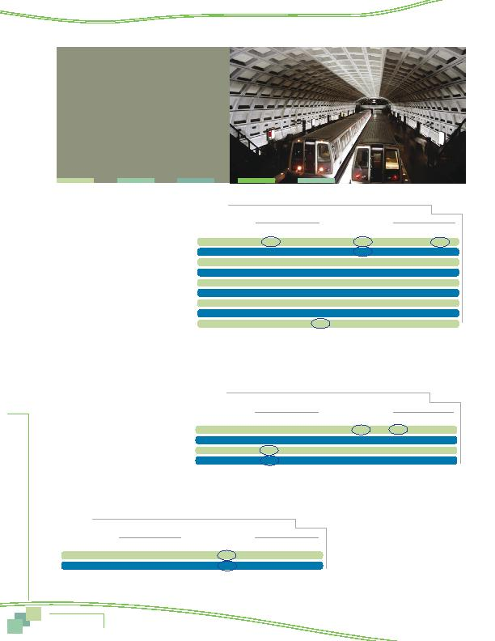

|

on e Comm and more likely to use the bus and to walk than were older respondents (Table 30). Use of these modes was consistent for respondents in the other age groups. Carpool/vanpool was used at equal rates by all age groups. had incomes of less than $30,000 showed substantially lower share of driving alone than did other income groups. Solo driving was equally common among both moderate and high-income respondents. Bus ridership declined steadily as income increased. When the lowest-income respondents are excluded, use of other modes was essentially the same for most income categories. the respondent's household. Not unex- pectedly, respondents who did not have a car available were considerably less likely to drive alone and considerably more likely to commute by bus or train than were those with one or more vehicles. As the number of vehicles in the household increased from zero to one and from one to two, driving alone increased and the use of bus and train declined significantly. Carpooling was fairly equal, however, regardless of the number of vehicles available. women; they were equally likely to drive alone, carpool/vanpool, ride a train, and walk or bicycle (Table 33). But women were statistically more likely to ride a bus (8% for women vs 5% for men). houshold increases, the use of transit declined significantly. |